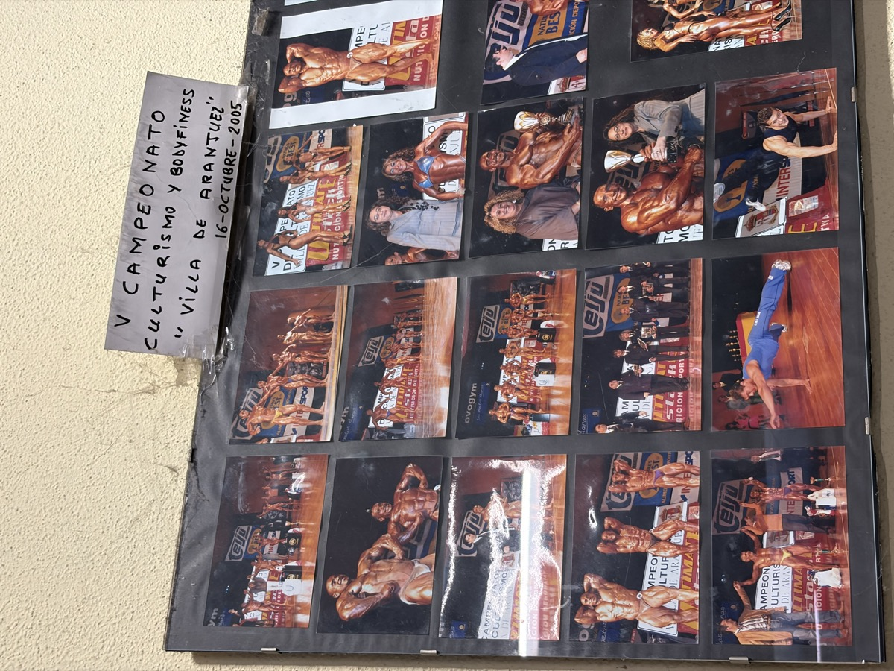
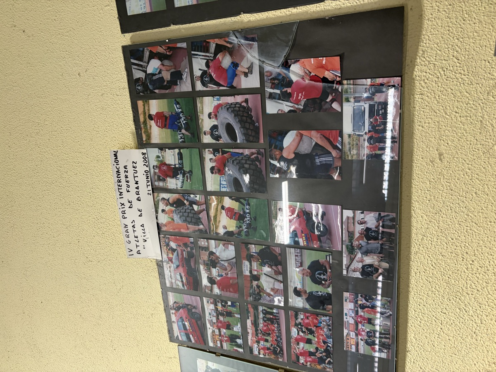
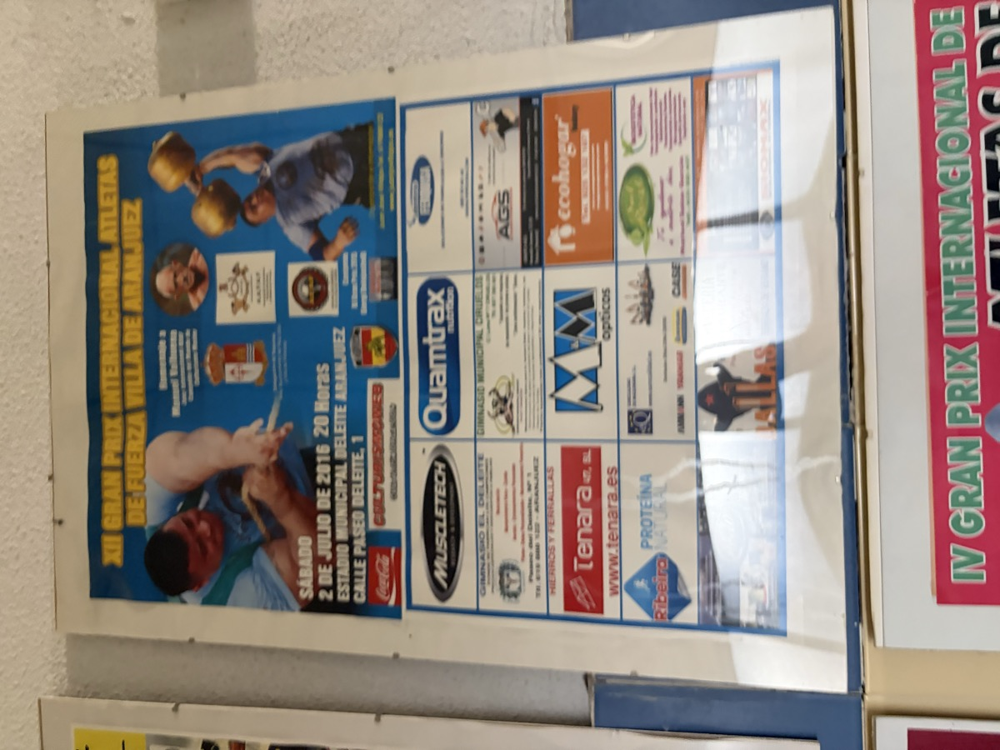
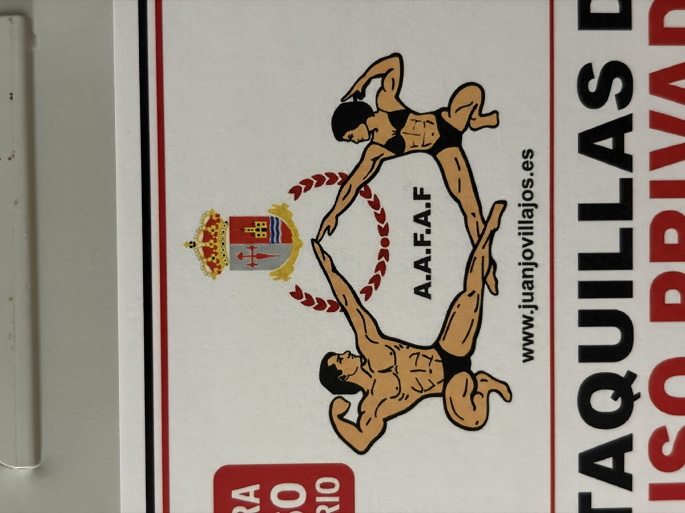

La galería del gimnasio
Estas son las fotos y carteles que cuelgan de nuestras paredes. Pulsa en cualquiera para ampliarla.






Las fotos de sala son ilustrativas mientras completamos el archivo del gimnasio.